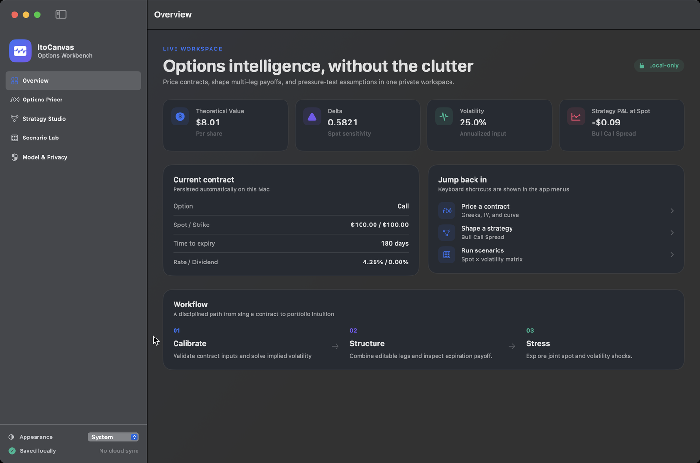
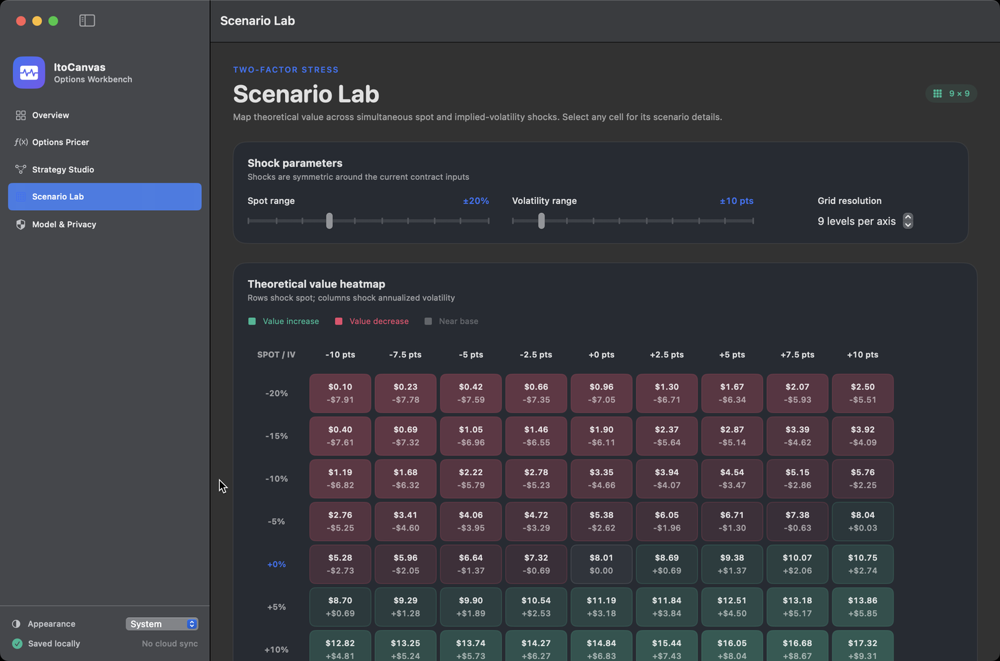

01
Quantitative finance · macOS 14+
ItoCanvas
An offline options laboratory that turns Black–Scholes–Merton formulas into a working, visual Mac app.
Price European options, inspect Greeks, solve implied volatility, shape multi-leg strategies, and stress spot and volatility together. The app stores work locally and does not require an account.

